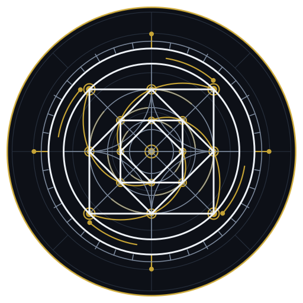

Geometric Animations¶

geometor/animations is the dynamic construction and animation studio of the interconnected GEOMETOR semantic digital archive. It documents systematic compass-and-straightedge constructions and proportional systems exploring unique golden sections across classical and root-system geometries, isolating exact geometric incidences for print, web, and dynamic SVG playback.
Proportional Systems & Studies¶
Three Golden Sections: Foundational studies seeking unique constructions where baselines section into golden proportions.
Root 3 & Root 5 Systems: Proportional explorations within square-root and diagonal lattice grids.
Star Polygons & Sequences: Cyclic star patterns and harmonic segment divisions.